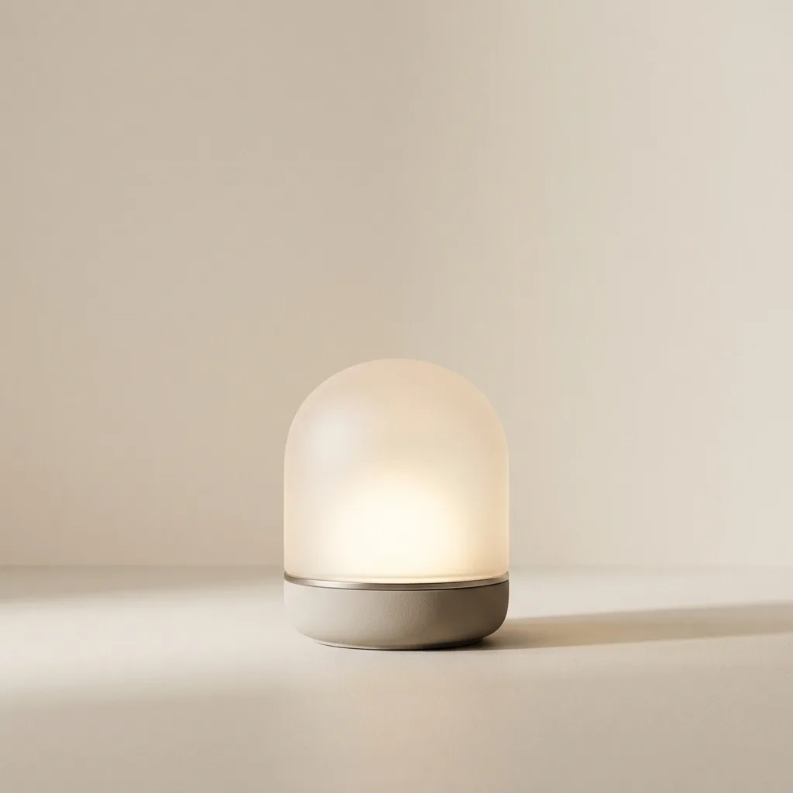
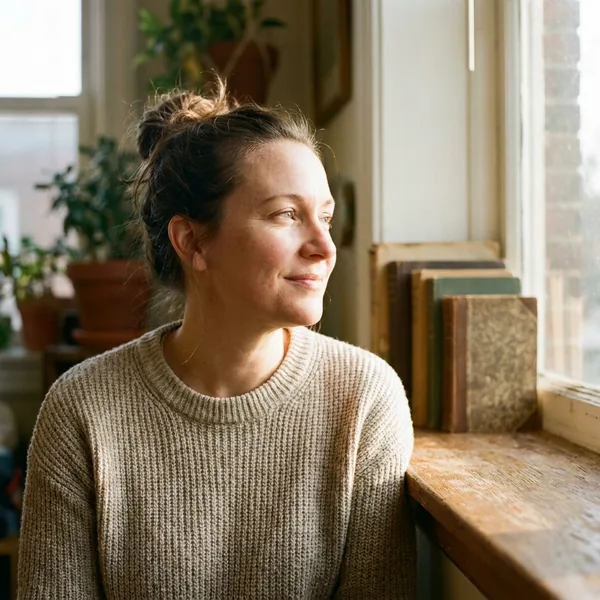

ZARIA One · лампа-рассвет
Просыпайтесь до будильника
Свет разгорается за тридцать минут — не рывком, а как в июне. Тело просыпается само, ещё до того как зазвонит будильник.
Так выглядел бы заказ в настоящем магазине. ZARIA — вымышленный бренд из портфолио, лампу пока нельзя купить. Ничего не оформлено и никуда не отправлено.
Одна ночь с ZARIA — от вечернего янтаря до рассвета, который будит раньше будильника. Прокрутите.
Свет разгорается за тридцать минут — не рывком, а как в июне. Тело просыпается само, ещё до того как зазвонит будильник.
Встать ночью и вернуться, не включая верхний свет. Коснуться кольца — свет, провести по нему — яркость. Утром вы этого даже не вспомните.
На четырнадцатый день 71 % пользователей открывают глаза раньше сигнала — в среднем на шесть минут. Лампа не будит. Она возвращает утро.
Самоотчёты в приложении ZARIA: ночи с первой по двадцать первую, протоколы «Вечер» и «Утро+».
с момента запуска приложения — и каждую ночь прибавляется
средняя по протоколу «Вечер» — минус 44 %
на четырнадцатый день будильник опаздывает на шесть минут

матовое стекло, 96 мм сенсорное кольцо керамическое основаниеУтром это восход, вечером — свеча, ночью — ночник на один процент. Ни приложения на экране, ни кнопок: коснуться кольца, провести по нему.
Лампа во всех тарифах одна и та же. Разница — в приложении и в том, кто ведёт ваш график.
Лампа и базовое приложение с рассветом и вечерним режимом.
Лампа и подписка на 12 месяцев с персональным графиком.
Две лампы, два профиля, одна подписка на двоих.
Подписка после первого года — 490 ₽ в месяц, отключается в один тап. Доставка по России 1–3 дня, 30 ночей на возврат.
2 431 оценка в приложении за последний год. Девять из десяти — пять звёзд.
Открываю глаза за пару минут до света и лежу, смотрю, как он растёт. Будильник не слышала ни разу с февраля.

Марина, Екатеринбургночь 43 · протокол «Утро+»«Вечерний режим включается сам в 21:40. Через неделю я перестал брать телефон в кровать — просто не тянет.»
ААнтон, Казаньночь 28 · протокол «Вечер»«Питерская зима, темно в восемь утра. Впервые встаю без ощущения, что меня выдернули из ночи.»
ННика, Санкт-Петербургночь 61 · протокол «Утро+»«Две лампы, два графика, две стороны кровати. Мы наконец перестали будить друг друга будильниками.»
ИДИлья и Даша, Москваночь 19 · тариф «Пара»Доставка по России за 1–3 дня · 30 ночей, чтобы передумать